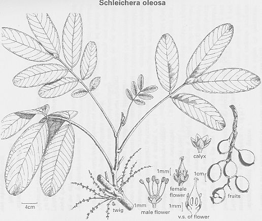

.jpg)
|
ECONOMICALLY
IMPORTANT PLANTS OF INDIA |
| Under-utilized Food and Fodder species and their wild relatives | Contributed by Ms.M.L Annapurna And Dr. Dhanapal, UAS, Bangalore |
Schleichera oleosa (Lour.) Oken.
Taxonomic Details
HABIT & HABITAT:
.jpg)
A medium-sized to large, deciduous
or nearly ever-green tree, up to 32-3 m. in height and 2-4-3-7 m. in girth,
usually with clear bole of c. 6 m., found in the sub-Himalayan tract from Kashmir
to West Bengal and in central and peninsular India, up to an altitude of 900
m., especially in the moist localities; also recorded from the Garo hills.
Deciduous forest, dry deciduous forest, Dry forest, evergreen forest, Foot hills,
Forests, Gardens, Hill forests, Hill slopes, Misc., Forests, Mixed Forest, moist
deciduous forest, Outskirts of Village, Reserve forests, Semi evergreen forest,
Shola, Tropical Forests and Valleys.
BioticZone: Himalaya, Khasia hills, Konkan plain, North West Himalayas, Peninsular
India, SubHimalayan tracts, Tropical Himalayas, West Coast and Western Ghats.
Availability :
Misc: Akeri, Alibag fort, Ambolighat, Aruvanpara, Attur, Bavandagad, Begur,
Bhati, Burdwan, Butpal-Ordofond, Canacona, Chelama, Codal, Corbett National Park, Foot
hills, Gundlabrahmeswaram, Kakanakote, Kalsubai hill, Kankvali, Korba, Kudal,
Kudmura, kumbhavde, Kunda Khoh (Shahbad), M.M.Hills, Main falls, Managaon,
Matheran,
Mirya dongar, Nadquem, Nallamalais, Nanapani, Narsapur Reserve Forest, Narur,
Nedumkayam, Nilambur, Panangad, Nilambur, Pen, Rajbhari, Ramgad forest, Sanguem,
Satari, Sawantwadi, Sawarna, Shuntiguthi, Silvassa, Sitabari, Sitanadi, Tiger
falls, Trisselari, Trombay, Walayar forest and Wotekolli.
Country: Ceylon, India, Indomalaysia, Malayasia, Myamnar, Myanmar, S.E.Asia and
Sri Lanka.
Zone: Central, East, North, North East, South and Westzone.
State: Andhra Pradesh, Bihar, Himachal Pradesh, Jammu & Kashmir, Karnataka,
Kerala, Madhya Pradesh, Maharashtra, Punjab, Rajasthan, Tamil Nadu and West Bengal.
District: Bankura, Bastar, Belgaum, Bellary, Bhopal, Bilaspur, Bombay, Cannanore,
Champaran, Chamrajnagar, Chikmaglore, Dakshin Kannada, Dharwad, Hassan,
Hoshangabad, Indore, Kodagu, Kota, Kurnool, Malappuram, Mandla, Medak, Mysore,
Nasik, Palaghat, Palani, Pune, Purulia, Raigad, Raigarh, Raipur, Satna, Seoni,
Shahdol, Shimoga, Sindhudurg, Surguja, Tirunelveli, Tumkur, Uttar Kannada,
Yawatma, Gundlpet, Heggadadevankote, Kankavli, Kollegal, Kudal, Madhugiri,
Pachmarhi, Sawantwadi,
Tenkasi and Wadgaon.
Status :
DIAGNOSTIC FEATURES
Bark gray or brown, red- dish inside, exfoliating in small, round,
irregular flakes c. 8 mm. thick; leaves paripinnate, 20-40 cm. long : leaf-
lets elliptic or elliptic-oblong, coriaceous, 5-25 cm. x 3-10 cm., 2-4 pairs. Flowers minute, yellowish green, either
male or bisexual, in axillary racemes; berries smooth or slightly prickly, globose
or ovoid, hard-skinned, 1-25-2-5 cm. x 1-1-1-8 cm., 1-2-seeded; seeds brown,
irregularly ellipsoidal, 1-0-1-5 cm. x 0-8-1-25 cm. slightly compress- ed, oily,
enclosed in a succulent aril which dries up on the seed.
Breeding System :
Phenology :
The flowering takes place during March-April
months and in some places the flowering will starts from February and extends
up to August.
Pollinators:
Seed Biology :
Seed Germination:
Natural regeneration of the tree is through seeds and t-suckers. The fruits
fall towards the end of the inner or in the beginning of the rainy season.
Under cultural conditions the germination of the seed and establishment of seedling appear
to depend largely upon the quickness of the seeds becoming covered by the earth and debris; if not, they
perish due to exposure to the sun.
The seeds are viable only for a short period; they can be stored for one year in gunny bags and two years in sealed tins. Germinating capacity of the seed is reported to be 58 per cent in Uttar Pradesh. If the weed growth is excessive, the growth of the seedlings is retarded. Seeds weigh 1,410-2,190 to a kg.
Artificial regeneration is done by direct sowing of fresh seed in thoroughly prepared soil or by stump-planting. In West Bengal, fresh seeds are sown direct, 7-5 cm. apart, at the rate of 2-3 seeds per stake. The gaps are filled up with surplus seedlings. The nursery raised seed-lings do not stand transplanting well. For obtaining stumps, the seeds may be sown in the nursery 5-0-7-5 cm. apart immediately after their collection. The stumps are prepared from the seedlings in the next transplanting season by which time the seedlings become 0-7-1-27 cm. in diam. The stump consists of c. 4-0 cm. shoot and 23 cm. root portion, the rest being discarded. With regular heavy showers of monsoon the stumps may be trans- planted in crow-bar holes or in cubical pits (30 cm.).
Plants may also be raised in pots and transplanted during subsequent rains. The seedlings are frost-tender in early stages, and are to be protected. Stump-planting appears to give better results in moist climate as on the west coast. Regular weeding and protection from grazing are essential for the first few years. Line-sowings along with field crops may prove successful. The growth of the seed- lings is believed to be slow to moderate. Trees raised by sowings in Singbhum district (Bihar) showed an average of 7-2 m. height and 36-8 cm. girth at the age of 16 years, the largest being 58 cm. in girth, corresponding to 3-6 cm. girth increment. The growth of the coppice-shoots is fast during the first few years, becoming slower after-wards. In South Kanara, three-year-old coppice-shoots attained a height of 4-9 m.; in Gonda (U.P.) one-year-old coppice-shoots reached an average height of 2-1 m.
Cultivation: MAJOR PESTS & DISEASES Diseases:
Rosellinia bunodes (Berk. & Br.) Sacc. and Polyporus weberianus
Bres. & P. Henn. cause stem blight and yellow-cork-rot respectively;
Daedalea flavida Lev and Hexagonia apiaria Pers. cause white spongy
rot; Irpex flaviis Koltz. causes white fibrous rot.
Pests:
Several defoliators, borers,
and sapsuckers attack the tree. A bug, Serinetha augur Fabr., pierces the testa
of the seed and feeds upon the oily cotyledons. The most important insect attacking
the tree is, however, the lac insect, Laccifer lacca (q.v.)
Economic
Potential and Uses
Parts used:
Tree.
Uses:
Harvesting
Practices
Produce and Products
Kusum Kernel Oil:
Kusum Kernal Oil-A fatty oil obtained from the seeds is known in co mmerce as MACASSAR OIL. The fruits are generally collected during May-July and the seeds removed. The collection is conveniently done by climbing up the trees J cutting off the fruit-bearing branches. On an average a full grown tree yields about 28-37 kg. of fruits in the season and an adult can collect 19-28 kg. of fruits which yield 14-21 kg. of depulped seed. For depulping, the fruits are kept in a heap for 2-4 days. During this period the pericarp decays, and is rubbed off with hand. the depulped seeds are washed, dried and stored. The joist seeds should be agitated from time to time. It is Stated that out of a total annual potential of c. 950 panes of seeds only 153 tones are collected in India. Surveys carried out in Midnapur, Purulia, and Bankura districts of West Bengal have shown that the yield of seeds per tree varies from 18 to 37 kg. It is estimated that in these districts of West Bengal 60 tones of seeds are collected annually out of a total potential of 409 tones; among these only 37 tones are crushed, yielding about 11 kilo's of oil
If the kernels constitute 60-65 per cent of the seeds, 31% of the dried fruit,
the rest being the shell. The content of the kernels varies from 59 to 72 per
cent, which is equivalent to 35-45 per cent of the entire seed. yield of fat
varies with the method and efficiency of oil extraction and the quality of seed;
with the boiling proportion, the yield is reported to be 32-35 per cent on the lljgPt
of the decorticated seeds, whereas by the bullock- ogBl"' method, it is
25-27 per cent. Re-pressing the oil- oje, after sprinkling with hot water, is
said to yield ojOther 2-5 per cent of fat. The testa is also reported to
o(attain
about 2-5 per cent of oil. Kusum seeds contain Bl^ (°^%} (Krishnamurthy
& Rao, loc. cit.; NE-Oilsecd [Kip"' Kusum, Indian Oilseeds Comm., Hyderabad,
5; BJtt et al., Indian Soap j.. 1950-51, 16, 72; Eckey, 627; ^Pia et cil., I,
269). Kusum oil is a yellowish brown semi-solid, with a faint odour of bitter
almonds. When allowed to stand, a lighter-coloured, solid fat separates and
settles down. The characteristics of the oil are as follows : sp. gr.15', 0-860-0-924;
1-4636; acid val., 13.1-19-2; sap. val., 215-230; iod. val., 47^55; and unsapon.
matter, 1-5-3-1%. The per- centage composition of mixed fatty acids is as follows
: palmitic, 1-6; stearic, 10-0; arachidic, 19-7; behenic, 0-9; palmitoleic,
3-1; oleic, 52-2; gadoleic, 8-5; and C acid, 4-0 [Krishna et al., Indian For.
Rec., N.S., Chem., 1936, 1(1), 41; Shrivastava et. al., Indian Oil &o Soap
]., 1963-64,29, 243J.
The oilcake has good manurial value and its analysis , showed its percentage composition to be : moisture, 5-57;protein, 22-31; fat, 48-53; soluble carbohydrates, 14-43; fibre, 5-39; soluble mineral matter, 3-40; sand, 0-37. It con- tains 3-08 per cent phosphoric acid (P2O5) and 1-13 per cent potash (K205). The cake is also used as fuel (Infor- mation from the Minor Forest Products Branch, F.R.I., Dehra Dun; Dutt et al., Indian Soap ]., 1950-51, 16, 72; Krishnamurthy & Rao, loc. cit.; Dinesh Bhushan, Indian Oilseeds ]., 1960, 4,, 33).
Kusum oil has long been used for hair dressing. It is also used for culinary and lighting purposes, as a lubri-cant for machinery and for the cure of itch, acne, burns and other forms of skin troubles; It is used for external massage in rheumatism. For edible purposes, the oil should be properly refined and deodorized to remove cyanogenedc glucosides. The oil is a common adulterant of mustard oil (Kirt. & Basu, I, 630; Jain, Econ. Bot., 1965, 19, 240; Krishnamurthy & Rao, loc. cit.; Fl. Delhi, 104; Chopra et al., I, 269; Jamieson, 92; I.P.C., 192).
Seed and seed oil, presumably due to the presence of hydrocyanic acid, induce symptoms similar to irritant poisons, producing giddiness, dilatation of pupils, and in fatal cases, syncope and death (Chopra et al., I, 269).
Kusum oil could be utilized for soap manufacture
and as a textile lubricant. However, due to various difficulties in processing
the oil, its direct use is considered inadvis-able. It contains cyanogenetic
glucosides, which on sapo- nification with caustic soda, yield sodium cyanide.
The presence of sodium cyanide is harmful, as it is responsible for retention
of large quantities of iron, and also corrodes the glycerine recovery plant.
This is why the spent lye is generally not utilized. The cyanogenetic glucoside
could be removed by treatment with excess ferric chloride be- fore using the
oil in soap manufacture. Apart from this, some ammonia is evolved due probably
to the presence of amides in the oil (Koley et al., Indian Oil &o Soap ].,
1964-65, 30, 321).
The soap obtained from Kusum oil is hard, granular and sloppy; lather is scanty and greasy, but gives consi-derably thick emulsion in water by rubbing. It has a roughening action on the skin but has excellent cleans- ing and emulsifying properties. It is, however, a useful ingredient in soap charges.
Dinesh Bhu- ||n, Indian Oilseeds ]., 1960, 4, 33).
Gamble, 195; IS : 399-1963;
Indian Woods, II, 234-^5;Trotter, 1944, 158, 254-55;
Kapur, Indian Fmg, N.S., 1954-55, 4(5), 25.
Purushotham et al., Indian For., 1953, 79, 49).
Sarma & gSri, Foreign Tr. India, ~No. 54, 1968, 40;